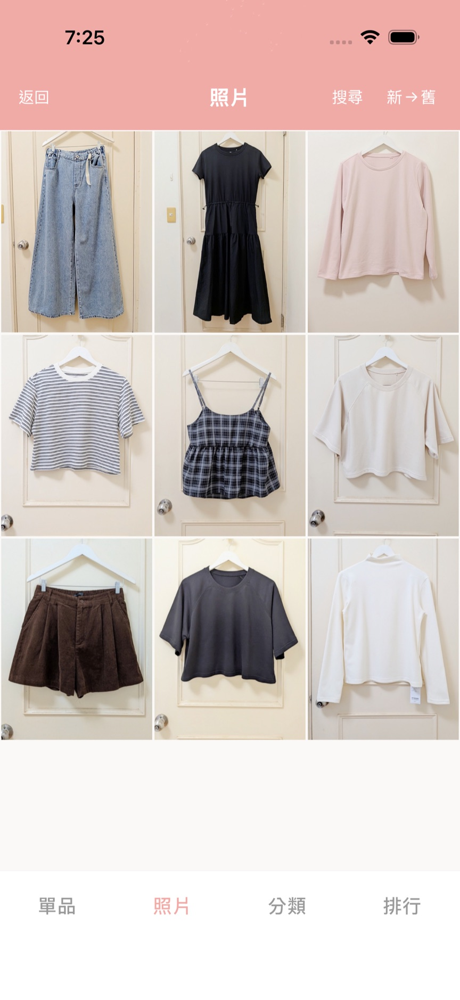
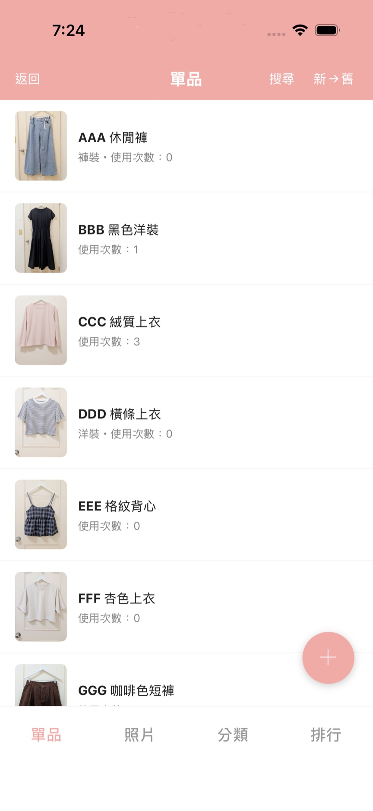
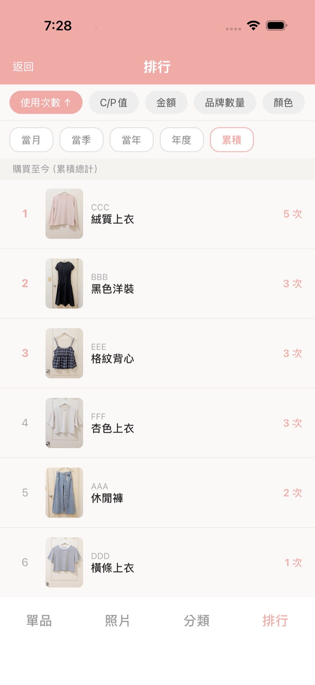

SPARK WEAR
心動衣櫥
曾經，我也是個擁有 547 件衣服的「購物狂」。
那時候，打開衣櫃不僅沒能帶給我喜悅，反而是一場焦慮。常常買了一模一樣的單品卻不自知，看著滿坑滿谷的衣服，每天早上卻依然覺得「沒衣服穿」。
直到那時，我讀了《斷捨離》和《怦然心動的人生整理魔法》，那一刻，我決定改變。
「整理，不是為了丟棄，而是為了重啟。」
為了找回與物品的連結，我親手打造了 SPARK WEAR。它不只是一個衣櫃管理工具，更是我冷靜消費的「清單」。透過它，在購物之前，我能隨時翻閱衣櫃，確認哪些單品已經足夠，成功地將衣櫃精簡至 110 件左右。
現在，衣櫃不再是負擔，而是我每日穿搭靈感的來源：
單品履歷：透過拍攝穿搭，紀錄每一件單品的使用率，讓被冷落的舊愛重新發光。
趣味排行：我設計了專屬投票系統，自動產出使用率與 C/P 值排行榜。原來，我最常穿的是那件基礎款針織衫，而不是當初失心瘋買的那件毛毛外套。
在這裡，斷捨離不再痛苦，反而是一場關於「品味」的自我挖掘。
SPARK WEAR，邀你一起，讓衣櫃大減重，讓生活更輕盈。
- 建立衣物資料庫：輕鬆收納所有單品，讓衣櫃一目了然。
- 趣味穿搭排行榜：透過數據，看見你最常穿的是哪件，並找出 C/P 值最高的單品與最愛的品牌。
- 穿搭日記：利用穿搭牆將單品使用狀況視覺化，讓每天的造型更有條理。
- 精準紀錄：不論是拍攝紀錄或手動投票，都能精確統計使用次數，讓單品不再被冷落。
- 聰明管理：透過長按或多選功能，即可進行批次重新分類或刪除，讓整理更有效率。
- 拍攝並建立衣物資料庫：將衣櫃裡的單品逐一拍攝建檔。
- 記錄每日穿搭：出門前拍攝穿搭照，並點選當日使用的單品。
- 手動補充紀錄：若當天沒有穿搭照，也能透過手動方式補充單品的使用次數。
- 觀賞趣味排行：自動生成的排行榜，讓你透過數據重新認識自己的穿搭風格與單品使用狀況。


